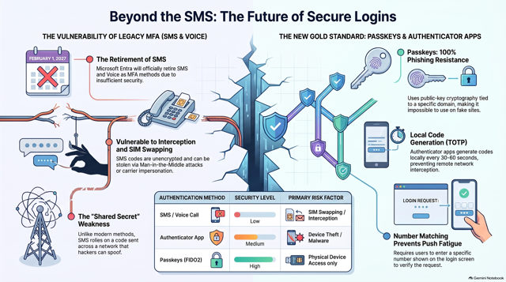

Typical login process
In a traditional login process you only have, in fact, just 1 factor, and it is **something you know**. Your login and your password.
Let's say your name is Alice.
sequenceDiagram participant Alice participant website participant attacker website ->> Alice: Welcome to our website
what's your login? website -->> attacker: Welcome to our website
what's your login? Alice ->> website: My login is alice@eample.com attacker -->>website: My login is alice@eample.com website ->> Alice: Hi Alice,
what's your password? website -->> attacker: Hi Alice,
what's your password? Alice ->> website: My password is ********** attacker -->>website: My password is ********** website ->> Alice: Welcome Alice! website -->> attacker: Welcome Alice!
As you see, both Alice and the attacker could log in, because the attacker was able to find Alice's password leaked online.
MFA-enabled login process
With MFA you have 2 (or 3 depending on how you look at it) factors:
- Something you know (login and password).
- Something you have (a device with an MFA token).
- Something you are (biometric authentication on your device).
Now let's examine the login process again.
sequenceDiagram participant Alice participant website participant attacker website ->> Alice: Welcome to our website
what's your login? website -->> attacker: Welcome to our website
what's your login? Alice ->> website: My login is alice@eample.com attacker -->>website: My login is alice@eample.com website ->> Alice: Hi Alice,
what's your password? website -->> attacker: Hi Alice,
what's your password? Alice ->> website: My password is ********** attacker -->>website: My password is ********** website ->> Alice: What's your MFA code? website -->> attacker: What's your MFA code? Alice ->> website: My MFA code is ****** attacker -->>website: My MFA code ??? website ->> Alice: Welcome Alice! website -->> attacker: Note left of attacker: Login error
As you see, the extra layer of MFA prevented the attacker from logging in.
MFA options
SMS as MFA
SMS seems to be a good choice, right? Easy because you always have your phone with you. However, there is an attack called *SIM Swapping*. It's an attack where the attacker is either hijacking your SIM card or cloning it. So whenever you receive an SMS, so does the bad guy.
Authenticator apps and TOTP
This is a much safer option. The app is always on your phone and is protected with your phone's biometrics and encryption. An app will generate a 6-digit code that will change frequently. The attacker has very little chance of guessing this code. There are $10^6$ codes and only 120 seconds to guess them. Chances are limited.
Physical keys
This is a physical device you would insert into your laptop's or phone's USB port. It provides a strong cryptographic key that authenticates you to the website or service you're trying to use. It can replace login and password entirely.
But if you lose it, well… Don't lose it. 😏
Passkeys
This is the latest trend in authentication. A secret key is stored on your phone. Whenever you are trying to log in, a QR code will be presented. Scan it with your device, and the magic happens in the background. Your phone confirmed it is near the device (via Bluetooth), so a remote attack is no longer possible. Your device received a random blob to sign, and if the website verifies your signature, you're in. I will not go into technical details, but this is by far the most secure and easy way to log in. The website doesn't store any secrets, so there is nothing to leak.
Potential attacks
- SIM Swapping / SIM Cloning
- Attackers trick or bribe mobile carriers into activating a new SIM card with the victim's phone number, allowing them to intercept SMS verification codes and bypass MFA.
- Man-in-the-Middle (MitM) Attacks & Network Interception*
- Cybercriminals intercept unencrypted data (such as SMS codes) over unsecured Wi-Fi networks or exploit security flaws in the global SS7 telephony protocol to reroute and capture codes in transit.
- Phishing & Social Engineering
- Attackers set up spoofed login pages or pose as support staff to trick users into entering, sharing, or dictating their time-based or one-time codes.
- Push Bombing (MFA Fatigue)
- Attackers bombard a user's device with push notifications in quick succession, hoping the victim will eventually click “Approve” out of frustration or accidentally.
- Malware
- Malicious software installed on a compromised device can directly capture SMS messages or steal authentication details from authenticator apps.
- Physical Theft of Devices
- A thief who physically steals a victim's smartphone can gain direct access to generated codes or local authenticator apps.
- Replay Attacks
- Attacks targeting shared secret MFA methods (like passwords, OTPs, or push notifications) where captured secrets can be reused by an attacker to authenticate.
- QR Code Theft
- During the initial setup of an authenticator app, cybercriminals can steal the configuration QR code to generate duplicate authentication tokens on their devices.
We secure small business workflows and office infrastructure across Flanders. We configure Microsoft 365 tenant protection, automated backups, and anti-phishing safeguards.